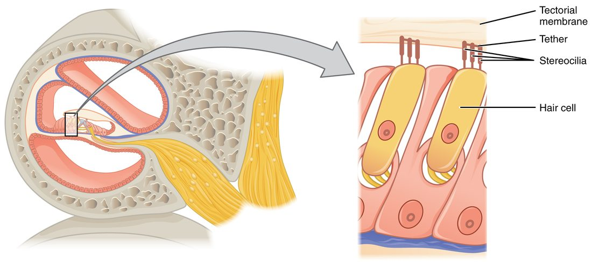
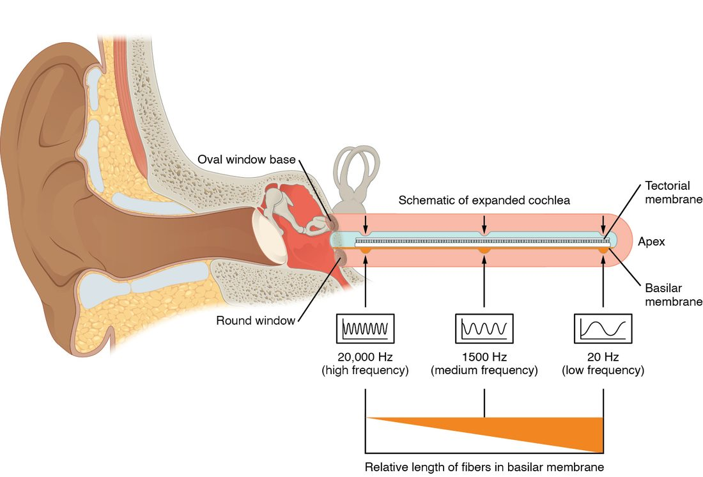

Your ear holds two sense organs in one bony shell: one for hearing and one for balance. Both run on the same sensor, the hair cell, which turns a tiny bend of its tip into an electrical signal. This page covers ear anatomy, hearing and balance in order: the three regions of the ear, how the middle ear delivers sound to fluid, how the cochlea sorts sound by pitch, how hair cells work, the pathway to the auditory cortex, how to tell the two kinds of hearing loss apart with a tuning fork, and how the vestibular apparatus senses tilt and turning.
The three regions of the ear
Follow a sound inward and it passes through three regions, each with a different medium: air, then bone, then fluid (Figure 1).
![A cut through the side of the head showing the ear. On the outside, the flap of the ear leads into a canal through the skull bone that ends at a thin membrane. Behind the membrane is a small air-filled space colored red, holding a chain of three tiny bones; the last one sits in an opening in the bony wall of the inner ear. A tube runs down and forward from this space toward the throat. Deeper in the bone lie a snail-shaped coil, three looped canals above it and the chamber between them, with two nerve branches leaving toward the brain. Brackets under the drawing divide it into outer, middle and inner parts.](../figures/os-14-5.jpg)
External ear
The external ear collects sound and funnels it inward. It has three parts:
- The auricle (auricula = little ear), or pinna, is the flap of skin over elastic cartilage that you call your ear. Its folds change incoming sound slightly depending on direction, which helps you tell whether a sound is above or below you.
- The ear canal (external acoustic meatus) is a tube about 2.5 cm long. Cartilage walls its outer third, and the temporal bone walls its inner two thirds. Glands in its skin make cerumen (earwax), which traps dust and slowly moves outward.
- The tympanic membrane (tympan- = drum), or eardrum, is a thin sheet of connective tissue stretched across the inner end of the canal. Sound waves make it vibrate.
Middle ear
The middle ear is a small air-filled space in the temporal bone, the tympanic cavity. Across it runs a chain of three tiny bones, the auditory ossicles (ossicle = little bone), linked by synovial joints:
- The malleus (malleus = hammer) is attached to the inside of the tympanic membrane.
- The incus (incus = anvil) links the malleus to the stapes.
- The stapes (stapes = stirrup) has a flat footplate that fits into the oval window, an opening in the bony wall of the inner ear.
When the eardrum vibrates, the ossicles rock and the stapes pushes in and out of the oval window like a piston.
The auditory tube (also called the eustachian tube) runs from the middle ear down and forward to the upper throat behind the nose. It is usually closed, and it opens briefly when you swallow or yawn, letting air in or out so the pressure on both sides of the eardrum is equal. When you drive down a mountain, the air outside presses harder than the air in your middle ear, the eardrum bows inward, and sound is muffled until a swallow opens the tube and your ears "pop." The tube is also the route by which throat infections reach the middle ear. In young children it is short and nearly level, which is one reason middle ear infections are so common in them.
Two tiny muscles attached to the ossicles contract reflexively in response to very loud sound. They stiffen the chain and reduce what reaches the inner ear, which protects it from some steady loud noise, though they react too slowly to block a sudden bang.
Inner ear
The inner ear is a set of fluid-filled channels in the densest part of the temporal bone, called the labyrinth (labyrinthos = maze) because of its shape. It has three parts:
- the cochlea (cochlea = snail shell), for hearing
- the vestibule (vestibulum = entrance hall), the central chamber, for sensing tilt and straight-line movement
- the three semicircular canals, for sensing turning
The labyrinth is a set of membranous tubes and sacs lying inside matching bony tunnels. The fluid between the bone and the membranous tubes is perilymph (peri- = around), which resembles extracellular fluid. The fluid inside the membranous tubes is endolymph (endo- = inside), which is unusual: it is high in K+ and low in Na+, like the fluid inside cells. That K+-rich fluid is what drives the hair cells, as you will see. The vestibulocochlear nerve (VIII) carries signals from all of it to the brainstem.
From air to fluid: why the middle ear is needed
Shout at a friend who is underwater and they barely hear you: nearly all the sound energy bounces off the water's surface. The same problem faces your ear, because the inner ear is filled with fluid. The middle ear overcomes it in two ways:
- Area. The tympanic membrane is about 17 to 20 times larger in area than the footplate of the stapes. The force collected over the large eardrum is delivered onto the small oval window, and pressure is force divided by area, so the pressure rises by the same factor.
- Leverage. The malleus is a little longer than the arm of the incus it pushes against, so the ossicles act as a lever that adds a little more force.
Together these raise the pressure at the oval window roughly 20-fold compared with the pressure on the eardrum. Without this boost, most of the sound would be reflected, as it is at the surface of a swimming pool.
Inside the cochlea
Uncoil the cochlea and you would have a tube about 3.5 cm long, divided along its length into three channels (Figure 2):
- The scala vestibuli (scala = staircase), the upper channel, starts at the oval window. It holds perilymph.
- The cochlear duct, the middle channel, is part of the membranous labyrinth and holds endolymph.
- The scala tympani, the lower channel, ends at the round window, a second opening back into the middle ear, sealed by a thin membrane. It holds perilymph.
The scala vestibuli and scala tympani join at the tip of the cochlea. The floor of the cochlear duct is the basilar membrane (basilar = at the base), a strip of fibers that runs the whole length of the cochlea. The sense organ of hearing sits on it: the spiral organ, also called the organ of Corti after the anatomist who described it. It holds rows of hair cells, with a flap of gel, the tectorial membrane (tect- = roof), lying over them.

The spiral organ has two kinds of hair cell:
- Inner hair cells, about 3,500 in a single row, are the true sensory cells. About 95% of the sensory neurons in the cochlear nerve come from them.
- Outer hair cells, about 12,000 in three rows, act mainly as amplifiers. They lengthen and shorten with each vibration, pumping extra energy into the basilar membrane's movement, which sharpens tuning and lets you hear faint sounds. They are the cells most easily destroyed by loud noise.
Hair cells and stereocilia
A hair cell is not a neuron and has no axon. It is a sensory receptor cell: an epithelial cell that detects a stimulus and passes the signal to a sensory neuron at a synapse. Its "hairs" are stereocilia (stereo- = solid, cilia = eyelashes), stiff projections of the cell membrane stiffened by actin. They are not true cilia and do not beat. On each hair cell they stand in rows that rise in height like a staircase (Figure 3).

A fine thread called a tip link joins the top of each stereocilium to the side of its taller neighbor. At the end of each tip link is a mechanically gated ion channel, the kind of channel you met in passive transport. What happens next depends on which way the bundle bends (Figure 4):
- Bent toward the tallest stereocilia. The tip links are stretched and pull more channels open. K+ flows in from the K+-rich endolymph, and the cell depolarizes. The depolarization opens voltage-gated Ca2+ channels at the base of the cell, Ca2+ enters, and the cell releases more of the neurotransmitter glutamate onto its sensory neuron, which fires faster.
- Bent away from the tallest stereocilia. The tip links slacken and the channels that were open at rest close. The cell hyperpolarizes, releases less glutamate, and its sensory neuron fires more slowly.
- At rest. A few channels are open even when the bundle is straight, so the sensory neuron fires at a steady background rate. That is why one hair cell can signal bending in both directions: faster for one, slower for the other.
Why does K+ flow in, when in most cells opening K+ channels lets K+ leak out? The tips of the stereocilia stand in endolymph, which is loaded with K+ and held about 80 mV positive to the perilymph. The electrical and chemical gradients together drive K+ into the cell. This is the same trick in reverse that makes chloride depolarize olfactory neurons: what matters is the gradient across that membrane, not the ion's usual direction.
Hair cells in the vestibular apparatus work the same way; each also has one true cilium, the kinocilium, standing beside its tallest stereocilium. Cochlear hair cells lose theirs as they mature.
How sound becomes a signal
Sound is a pressure wave: air molecules pushed together and pulled apart in a repeating pattern. Two features of the wave matter for hearing.
- Frequency is how many waves pass each second, measured in hertz (Hz). You hear frequency as pitch: a bass drum is about 50 Hz, a whistle 2,000 Hz or more. A young adult hears from about 20 to 20,000 Hz and is most sensitive between about 1,000 and 4,000 Hz, the range that carries the consonants of speech.
- Amplitude is the size of the pressure change. You hear it as loudness, measured in decibels (dB). The scale is logarithmic: every 10 dB step is a tenfold rise in sound intensity. Normal conversation is about 60 dB; hours of exposure above about 85 dB, a busy workshop or loud headphones, can damage hair cells.
Audition (audit- = hearing) is the sense of hearing: the conversion of these pressure waves into nerve signals and their perception. Here is the whole chain from air to nerve:
- Sound waves enter the ear canal and vibrate the tympanic membrane.
- The malleus, incus and stapes carry the vibration across the middle ear, raising its pressure.
- The stapes rocks in the oval window and sets up pressure waves in the perilymph of the scala vestibuli.
- The waves push on the cochlear duct and make the basilar membrane vibrate. Fluid cannot be compressed, so each inward push of the stapes is matched by an outward bulge of the round window.
- As the basilar membrane moves up and down, the tectorial membrane above slides across the hair cells and bends their stereocilia back and forth. The tallest stereocilia of the outer hair cells are embedded in it; the inner hair cells' stereocilia stand free and are bent by the fluid it drags.
- Bending opens and closes the channels, the hair cells release glutamate in rhythm with the sound, and the sensory neurons of the cochlear nerve fire.
Place coding: how the cochlea sorts pitch
Run your finger along the strings inside a piano: short, tight strings at one end, long, loose ones at the other. The basilar membrane is built on the same plan (Figure 5):
- At the base of the cochlea, near the oval window, it is narrow and stiff. It vibrates most for high frequencies.
- At the apex, the far tip, it is wide and floppy. It vibrates most for low frequencies.
Each sound sends a wave traveling along the membrane from the base toward the apex. The wave grows until it reaches the place tuned to its frequency, peaks there and then dies away. So a high note shakes mainly the hair cells near the base, and a low note mainly those near the apex. Which hair cells fire tells your brain the pitch. This is place coding, and the orderly map of frequency along the cochlea is kept all the way up to the primary auditory cortex, which is laid out from low notes to high notes.

Loudness is coded differently. A louder sound makes the basilar membrane move farther, so each hair cell bends more and its sensory neurons fire faster, and the peak spreads so that more hair cells, and more neurons, are recruited.
The auditory pathway
The cell bodies of the cochlear sensory neurons sit in the spiral ganglion, in the bony core of the cochlea. Their axons form the cochlear branch of the vestibulocochlear nerve. The auditory pathway then runs:
- Cochlear nuclei in the brainstem, where the cochlear nerve fibers synapse on the same side.
- Superior olivary nuclei in the brainstem, on both sides. Here signals from the two ears first meet. Neurons compare when a sound reaches each ear and how loud it is in each, which is how you tell where a sound is coming from: a sound on your right reaches your right ear a fraction of a millisecond sooner, and louder, because your head shadows the left ear.
- Inferior colliculus in the midbrain, which also turns your head toward a sudden sound.
- Medial geniculate nucleus of the thalamus, the auditory relay (the visual relay is its lateral neighbor).
- Primary auditory cortex in the temporal lobe.
Because fibers cross at several levels, each ear sends signals to both sides of the brain. Damage to the auditory cortex on one side therefore does not make either ear deaf. Deafness in one ear points to damage in that ear, its cochlear nerve, or its cochlear nuclei.
Hearing loss: conductive or sensorineural?
There are two kinds of hearing loss, and they follow from the anatomy:
| Conductive hearing loss | Sensorineural hearing loss | |
|---|---|---|
| What fails | Delivery of sound to the inner ear | Conversion of sound to nerve signals, or their transmission |
| Where | External or middle ear | Cochlea (usually hair cells) or cochlear nerve |
| Common causes | Earwax plug, fluid in the middle ear, a torn eardrum, a stapes fused in the oval window | Loud noise, aging, some drugs, a tumor on the cochlear nerve |
| Sound through the skull bone | Heard normally, because it bypasses the blocked route | Also reduced, because the cochlea or nerve itself is damaged |
| Weber test sound is heard in | The affected ear | The better ear |
| Rinne test in the affected ear | Bone louder or longer than air | Air louder or longer than bone (both reduced) |
| Often treatable by | Removing wax, draining fluid, surgery | Hearing aids, cochlear implants |
A vibrating tuning fork pressed on the skull shakes the whole skull, and that vibration reaches the cochlea directly, bypassing the external and middle ear. This is bone conduction. The usual route, through the ear canal and ossicles, is air conduction. Comparing the two tells you where the problem is.
- Weber test. A vibrating tuning fork (usually 512 Hz) is placed on the middle of the forehead or the top of the head. The person says where they hear it. Normally it is heard in the middle. In conductive loss it is heard louder in the affected ear: that ear is no longer hearing the room's background noise, which normally masks the bone-conducted sound, and a blocked canal traps the vibration. In sensorineural loss it is heard in the better ear, because the damaged cochlea or nerve responds less to any sound.
- Rinne test. The vibrating fork is placed on the mastoid process behind one ear until the person can no longer hear it, then held beside the opening of the ear canal. Normally air conduction is better than bone conduction, so the person hears it again. If the fork is heard longer on the bone than in the air, sound is being blocked on its way through the external or middle ear: conductive loss in that ear.
Worked example 1: a conductive loss
Problem. After a head cold, Aiden, 6, says his left ear feels "full." In the Weber test he hears the fork louder in his left ear. In the Rinne test on his left side, he hears the fork longer on the mastoid process than beside the ear. His right ear gives a normal Rinne test. What kind of hearing loss does he have, and where?
- Read the Weber test. The sound goes to the left ear. That means either a conductive loss in the left ear or a sensorineural loss in the right ear.
- Read the left Rinne test. Bone conduction beats air conduction on the left. Sound is not getting through the left external or middle ear: a conductive loss on the left.
- Check the right ear. Its Rinne test is normal (air better than bone), which fits a healthy right ear, not a right sensorineural loss.
- Combine. Both tests point to the left ear, and both say conductive.
Answer. A conductive hearing loss in the left ear, most likely from fluid in the middle ear after the cold.
Worked example 2: a sensorineural loss
Problem. Ms. Rossi, 58, has worked for years beside loud machinery and has trouble hearing in her right ear. In the Weber test she hears the fork louder in her left ear. The Rinne test is normal on both sides: air conduction is better than bone conduction, though on the right both are faint. What kind of loss is this, and where?
- Read the Weber test. The sound goes to the left ear: either a conductive loss on the left or a sensorineural loss on the right.
- Read the Rinne tests. Air beats bone on both sides, so neither ear has a conductive block. That rules out a left conductive loss.
- Combine. The Weber test lateralizes away from the right ear, and the right ear has no conductive block but hears both routes faintly. The problem lies in the right cochlea or cochlear nerve.
Answer. A sensorineural hearing loss in the right ear, most likely hair cell damage from noise.
The vestibular apparatus
Close your eyes in a lift and you still know when it starts to rise; tip your head and you know which way it tipped; spin around and you feel the spin. Equilibrium, the sense of balance, comes mainly from the vestibular apparatus: the vestibule and the semicircular canals of each inner ear. Both parts use hair cells, but they bend them in different ways.
The utricle and saccule: tilt and straight-line movement
The vestibule holds two membranous sacs, the utricle (utricle = little bag) and the saccule (saccule = little sac). Each has a patch of hair cells in its wall called a macula (macula = spot) (Figure 6).
- The stereocilia of the macula's hair cells stick up into a gel layer, the otolithic membrane.
- On top of the gel sit thousands of tiny crystals of calcium carbonate, the otoliths (oto- = ear, lith- = stone). They make the gel heavier than the endolymph around it.
- When you tilt your head, gravity pulls the heavy gel downhill, and it slides over the hair cells and bends their stereocilia. When you start to move in a straight line, the gel lags behind for a moment, and bends them the other way.
The macula of the utricle lies roughly horizontal when your head is upright, so it senses forward, backward and sideways movement and tilt. The macula of the saccule lies roughly vertical, so it senses up-and-down movement, like a lift starting. Because hair cells in each macula face many directions, the pattern of which cells depolarize and which hyperpolarize tells your brain the exact direction of the tilt or movement.

The semicircular canals: turning
Each inner ear has three semicircular canals set at right angles to one another, like the corner of a box, so that any turn of the head moves the fluid in at least one of them. At the base of each canal is a swelling, the ampulla (ampulla = flask), which holds a ridge of hair cells. Their stereocilia project into a tall gel cap, the cupula (cupula = little cup), that spans the canal like a swinging door (Figure 7).
- When you start turning your head, the canal turns with it.
- The endolymph inside lags behind, because of its inertia, so it flows through the canal in the opposite direction to the turn.
- The flowing fluid pushes the cupula, which bends the stereocilia and changes the firing of the sensory neurons.
The cupula has the same density as the endolymph and has no crystals, so unlike the macula it is not pulled by gravity: it senses only turning. If you keep turning at a steady speed, the fluid catches up after 20 seconds or so, the cupula swings back upright, and the feeling of turning fades. When you then stop, the fluid keeps going, bends the cupula the other way, and you feel as if you are spinning in the opposite direction. That is the dizziness after a playground roundabout.

| Cochlea | Vestibular apparatus | |
|---|---|---|
| Sense | Hearing | Equilibrium: tilt, straight-line movement and turning of the head |
| Parts | Scala vestibuli, cochlear duct, scala tympani | Utricle and saccule (in the vestibule); three semicircular canals |
| Sensory cells | Inner and outer hair cells in the spiral organ | Hair cells in the maculae and in the ampullae |
| What the stereocilia touch | The tectorial membrane (only the outer hair cells' tallest stereocilia are embedded in it; the inner hair cells' are bent by the fluid beneath it) | The otolithic membrane (maculae) or the cupula (canals) |
| What bends the stereocilia | Vibration of the basilar membrane by sound | Gravity and lagging gel (maculae); lagging endolymph (canals) |
| Nerve branch | Cochlear branch of cranial nerve VIII | Vestibular branch of cranial nerve VIII |
| First brain relay | Cochlear nuclei in the brainstem | Vestibular nuclei in the brainstem |
Where vestibular signals go
The vestibular branch of the vestibulocochlear nerve carries signals to the vestibular nuclei in the brainstem. From there they go:
- to the cerebellum, which uses them to coordinate balance and movement
- down the spinal cord to the muscles that hold you upright, so you catch yourself when you slip
- to the nuclei of the nerves that move the eyes (III, IV and VI), for the reflex below
- through the thalamus to the cortex, so you are aware of your position and movement
Your brain also combines vestibular signals with vision and with proprioception from muscles and joints. When they disagree, for example reading in the back seat of a moving car, where your eyes say "still" and your inner ears say "moving," the mismatch can cause motion sickness.
The vestibulo-ocular reflex
Read this sentence while shaking your head gently from side to side. The words stay clear. Now hold your head still and shake the page at the same speed: the words blur. The difference is the vestibulo-ocular reflex (VOR). When your head turns one way, the semicircular canals signal the turn to the vestibular nuclei, which drive the eye muscles to turn both eyes the same amount the opposite way, within about 10 milliseconds. The image stays still on your retinas. When the page moves instead, the reflex has no head movement to work from, and your eyes cannot track it as fast.